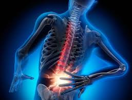

¿Quién soy?
Mi nombre es Mario Alejandro Escobar Silva, nací en 2007, actualmente tengo 18 años y este año cumpliré 19. Mido 1.80 metros, peso 163 libras y vivo en la zona 11 de Mixco. Mis mayores logros son haber pasado a 6to y haber comprado mi Nintendo Switch 2.

Algo sobre mí
Soy muy sociable pero bastante cayado con los adultos ya que los temas van a ser muy variados entonces me cuesta mucho conversar con los adultos algo que me enoja es que me toquen las costillas ya que como soy delgado se me sienten los huesos de las costillas y por ultimo sufro mucho de la espalda ya que como soy alto me duele costantemente la espalda cuando estoy mucho tiempo sentado
Mis Metas
Mis metas son graduarme con mis compañeros este año, viajar a España estudiar Psicología en la universidad.
 Ver mis propuestas
Ver mis propuestas